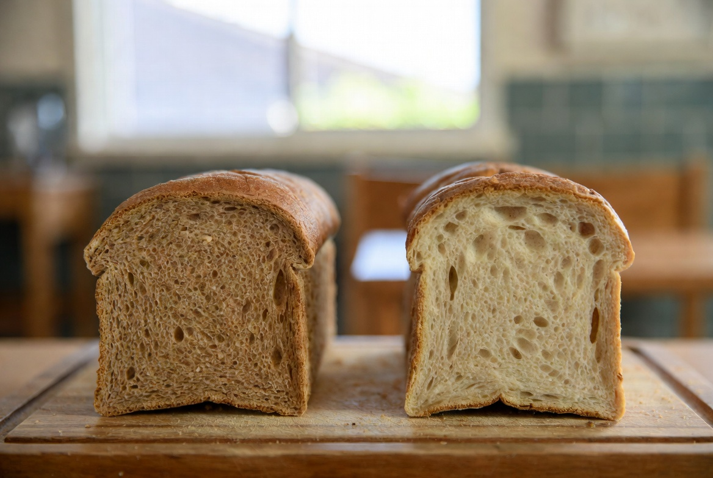

만들려던 빵 / 목표
목표는 여전히 기억 속 밤식빵의 촉촉함입니다. 3차에서 수분 +2%p 후 다음 날 식감이 소폭 나아졌고, '보관이 그 차이를 키우거나 깎는다'는 질문이 남았습니다. 어릴 적 그 빵집에서는 식빵을 봉지에 넣어 주었는지, 개방 상태였는지 정확히 기억나지 않습니다. 다만 다음 날에도 부드러웠다는 감각만 남아 있습니다.
2025년 7월 28일 4차 실험입니다. 같은 날 같은 반죽으로 두 덩어리를 만들었습니다. 토핑·굽기까지 모두 동일하고, 식힌 뒤(완전 냉각 후) 보관 방법만 달랐습니다.
3차에서 다음 날 식감이 소폭 나아졌을 때, '반죽만의 효과인지 보관도 영향을 줬는지'가 불분명했습니다. 1차에서는 실온 개방 12시간 후 건조가 문제였는데, 같은 조건을 3차 반죽에도 적용해 볼 필요가 있었습니다.
실패 1~3 — 눈에 보인 현상
- 실온 개방 — 다음 날 겉이 더 건조, 밤 토핑 가장자리가 바삭해지며 기억과는 반대 방향
- 루즈 백 — 겉 건조는 줄었으나 껍질이 약간 눅눅, 밤 밀착감은 3차와 비슷
- 둘 다 — '그때 그 맛'이라고 말할 정도는 아님. 보관만으로는 한계
비교 결과 루즈 백이 실온 개방보다 다음 날 속 촉촉함에 유리했습니다. 차이는 크지 않았지만 재현 가능한 방향이었습니다. 가족은 루즈 백 쪽을 '어제 만든 빵 같다'고 했고, 개방 쪽은 '토스트 해도 될 것 같다'는 반응이었습니다.

이번 실험은 '실패'보다 두 조건의 차이를 확인하는 데 가깝습니다. 둘 다 완성은 아니지만, 보관이 식감에 영향을 준다는 것은 분명해졌습니다.
다음 날 아침 같은 두께로 잘랐을 때, A(개방)는 크럼이 더 갈라지고 B(루즈 백)는 결이 이어지는 느낌이 났습니다. 차이는 크지 않았지만 사진과 메모로 남길 만했습니다.
1차에서 실온 개방 12시간 후 건조가 문제였는데, 3차 반죽에서도 같은 현상이 반복됐습니다. 수분을 올려도 보관을 개방하면 다음 날이 다시 건조 쪽으로 기울 수 있다는 뜻입니다.
루즈 백에 넣은 쪽은 다음 날 속이 촉촉했지만, 겉 껍질이 눅눅해졌습니다. 개방 보관 쪽은 겉은 바삭한데 속이 건조했습니다. 둘 다 완벽하지 않아서, 5차까지 보관은 '루즈 백 + 짧은 개방' 조합을 검토하게 됐습니다.
원인 추정 (추정 vs 확인)
개방 보관 건조: 표면 수분이 빠르게 날아감 — 확인. 여름 실온(27°C 전후)에서 하룻밤 개방은 건조 가속
루즈 백 눅눅함: 습기가 껍질에 머물며 바삭함 감소 — 부분 확인. 밤 토핑 바삭함이 기억과 다를 수 있음
보관만으로 한계: 수분·토핑·시럽 변수가 아직 남음 — 추정, 5차에서 시럽 졸임 검토
4차는 보관 변수 하나를 분리해 비교한 날입니다. '루즈 백이 낫다'는 결론은 3차 반죽(+2%p) 위에서 나온 것임을 함께 적어 둡니다.
껍질 바삭함과 속 촉촉함은 동시에 만족시키기 어려웠습니다. 4차는 그 트레이드오프를 보관이라는 이름으로 처음 수치화한 날입니다.
바꾼 변수 하나
반죽·토핑·굽기는 3차와 동일. 변수는 식힌 뒤 보관만.
- A: 완전 냉각 후 실온(27°C) 개방, 12시간
- B: 완전 냉각 후 루즈 백(공기 한 점 들어가게 묶음), 같은 위치·같은 12시간
같은 날 오전에 반죽 한 배치를 두 덩어리로 나눴습니다. 발효·굽기 시간 차로 인한 오차를 줄이기 위해 동시에 오븐에 넣었습니다. 2025년 7월 28일, 저녁 8시 식힘 완료 후 보관 시작, 다음 날 아침 8시 비교.
같은 배치에서 두 덩어리를 나눴을 때, 자르는 위치를 표시해 두지 않으면 다음 날 비교 사진이 헷갈렸습니다. A/B 스티커를 팬 바닥에 붙였습니다.
다음 시도 계획
- 5차: 3차 수분 + 2차 토핑 시점 + 시럽 졸임 +2분
- 보관은 5차에서 루즈 백 쪽으로 통일
- 밤 토핑 바삭함은 시럽·굽기 후 처리와 함께 검토
4차로 보관 기준을 잡았으니, 5차부터는 시럽 쪽 변수를 열 예정이었습니다.
보관 실험은 사진이 화려하지 않아 일지에서 빠지기 쉽습니다. 그래서 4차는 의도적으로 짧아도 별도 글로 남겼습니다.
왜 같은 날 두 덩어리인가
보관만 비교하려면 굽기까지 같아야 합니다. 다른 날 두 번 굽으면 실내 온도·반죽 상태가 달라집니다. 2차 토핑 시점, 3차 수분을 합친 상태에서 보관 효과만 보기 위해 한 배치·두 덩어리 방식을 썼습니다.
완전 밀봉은 시중 식빵 봉지에 가깝고, 개방은 베이커리 진열대에 가깝다고 생각했습니다. 루즈 백은 그 중간입니다.
보관은 레시피보다 습관에 가깝게 대하는 경우가 많습니다. 그래서 4차에서는 의도적으로 극단에 가까운 두 방식만 놓고, 다음 날 아침에 같은 칼·같은 각도로 잘라 비교했습니다.
R&D 일지를 읽는 분께
집에서 식빵을 하룻밤 두실 때 봉지·개방·냉장 중 어떤 방식이 기억의 밤식빵에 가까우셨는지 문의로 알려 주세요. 지역 습도 차이가 큽니다.
실전 적용 노트
실험 당일 메모: 2025-07-28, 3차와 동일 반죽, 두 덩어리 동시 굽기, 20:00 보관 시작, 08:00 비교. 라벨 A/B를 팬에 붙여 혼동 방지.
루즈 백은 너무 꽉 묶지 않았습니다. 완전 밀봉은 껍질이 눅눅해지는 경우가 많아, 이번에는 '공기 한 점'만 남기고 묶었습니다. 다음 실험에서도 이 방식을 기본으로 둘 생각입니다.
발행 2026-06-12, 실험 2025-07-28.
보관 비교는 화려하지 않지만 R&D에서 자주 건너뛰는 변수입니다. 같은 반죽이라도 밤에 어떻게 두느냐에 따라 아침 식감이 달라지면, 레시피만 고친다고 해결되지 않을 수 있습니다. 5차부터는 루즈 백을 기본으로 통일했습니다.
A/B 두 덩어리는 같은 선반·같은 높이에 두었습니다. 한쪽만 에어컨 바람에 노출되면 보관 변수가 섞이기 때문입니다. 작은 환경 통제가 비교 실험에서는 변수만큼 중요합니다.
정리하며
4차는 화려한 레시피가 아니라 식힌 뒤 어떻게 두느냐를 기록한 날입니다. 루즈 백이 실온 개방보다 다음 날 촉촉함에 유리했고, 그 차이는 작지만 재현 가능했습니다. 5차에서는 시럽 졸임 시간을 2분 늘리고, 지금까지 나은 조건을 묶어 봅니다. R&D로 넘어온 방식대로 변수를 하나씩 쌓고 있습니다. 5차에서 시럽 졸임 시간을 열 예정입니다.
초보자가 자주 실수하는 포인트
- 다른 날 두 번 굽고 보관만 비교해 반죽 차이를 섞기
- 완전 밀봉과 루즈 백을 구분 없이 '봉지'로 기록하기
- 보관 결과만 보고 3차 수분 전제를 잊기
- 겉 바삭함과 속 촉촉함 중 하나만 보고 판단하기
체크리스트
- 같은 배치·동시 굽기 확인
- A/B 라벨 붙이기
- 냉각 완료 후 보관 시작 시각 기록
- 다음 날 같은 시각 비교
자주 묻는 질문
- 왜 냉장 보관은 안 했나요?
- 기억 속 그 빵집은 실온에서 사 먹거나 당일·다음 날 실온 보관에 가깝다고 봤습니다. 냉장은 별도 실험 후보로 남겨 두었습니다.
- 루즈 백이 항상 답인가요?
- 4차 기준으로는 3차 반죽에서 개방보다 낫습니다. 시럽·토핑이 바뀌면 껍질 눅눅함 정도도 달라질 수 있어 5차 이후에도 같이 봅니다.
이 글은 운영자의 직접 경험을 바탕으로 작성되었으며, 오븐·재료·환경에 따라 결과는 달라질 수 있습니다. 식품 위생·알레르기 등 건강 관련 판단을 대체하지 않습니다.